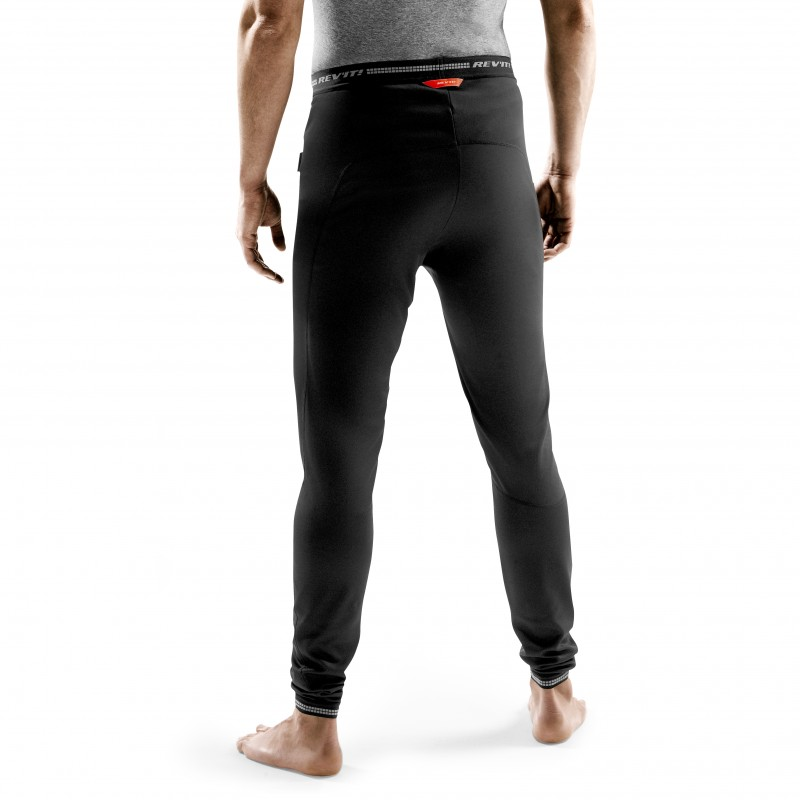

Welcome to terminiai apatiniai
Vyriški terminiai apatiniai
2020.10.29 03:58Klientų aptarnavimas Klientų aptarnavimas Internetinė parduotuvė: +37125738397 Rygoje, Dārzciema gatvėje 60: +371 67563422 E-paštas : info@my-sport.lv Currency EUR USD - JAV doleris Language Lietuviškai Latvian English Russian Estonian German Prisijungti Prekių ženklai % Outlet Apie mus Apie mums Parduotuve Prekių pristatymas Kontaktai Menu Kategorijos Bėgimas Bėgimo bateliai Vyriški bėgimo bateliai Moteriški bėgimo bateliai Vaikiška avalynė Bateliai bėgimui asfaltu Bėgimo gamtoje bateliai Išpardavimas -50% Bėgimo drabužiai Vyriška bėgimo apranga Moteriška bėgimo apranga Vaikiška bėgimo apranga Bėgimo marškinėliai Bėgimo striukės Bėgimo šortai Bėgimo kelnės Apatiniai drabužiai bėgimui Išpardavimas %%% Bėgimo priedai Bėgimo kojinės Bėgimo kepurės Bėgimo pirštinės Bėgimo rankinės Gertuvių rankinės bėgimui Buteliai bėgimui Bėgimo įranga Važiavimas dviračiu Dviračiai Vaikiški dviračiai Balansiniai dviratukai 12 -16 20 24 Dviračiai paaugliams Kalnų dviračiai Kroso tipo dviračiai Miesto dviračiai Turistiniai dviračiai Moteriški dviračiai Plentiniai, Gravel, Cyclo Cross dviračiai Elektriniai dviračiai Išpardavimas %%% Dviratininkų drabužiai Vyriška dviratininko apranga Moteriška dviratininko apranga Vaikiški dviratininkų drabužiai Dviratininkų marškinėliai Dviratininkų šortai Dviratininkų striukės Dviratininkų kelnės Liemenės Apatiniai drabužiai dviratininkams Rankų ir kojų šildikliai Antbačiai Dviratininkų pirštinės Dviratininkų kojinės Dviratininkų kepurės Išpardavimas %%% Dviratininkų batai MTB dviratininko bateliai Važiavimo plentu dviratininko bateliai Dviratininko batelių antbačiai Dviratininkų šalmai Atsarginės dalys Dviračių padangos ir kameros Kameros MTB dviračių padangos Plento dviračių padangos Miesto ir turistinių dviračių padangos Vaikiškų dviračių padangos Bekamerinių padangų sandarinimo skysčiai Kasetės Grandinės ir grandinių atkarpos Pedalai Platforminiai pedalai MTB pedalai Plento pedalai Pedalų priedai Stabdžiai Diskiniai stabdžiai V-stabdžiai Stabdžių diskai Stabdžių kaladėlės Stabdžių priedai Pavaros ir jų dalys Švaistikliai ir krumpliaračiai Monoblokai Rati & rumbas & aploces Ratai Stebulės ir priedai Ratlankiai Balneliai & balnelio stoveliai & spaustukai Vairai ir iškyšos Guoliai & trosai Išpardavimas %%% Dviračių priedai Atraminės kojelės Dviračių bagažinės Vaikų kėdutės Dviračių kompiuteriai Purvasaugiai Krepšeliai Dviračių įrankiai Dviračių lempos Dviratininkų gertuvės Gertuvių laikikliai Pompos Frame Guards Dviratininkų spynos Dviračių krepšiai Vairo juostos Dviračiai Treniruoklis Stogo bagažinės Skambučiai Priežiūros priemonės Alyvos Valikliai Žygiai Žygio batai Vyrams žygio batai Moterims žygio batai Vaikams žygio batai Žygio apranga Žygio striukės Žygio kelnės Šiaurietiško ėjimo lazdos Žygio kuprinės Žygio kojinės Distancinis slidinėjimas Slidžių komplektai Lygumų slidės Skating Classic Combi Touring Junior Lygumų slidžių batai Skating Classic Combi Touring Junior Antbačiai Lygumų slidžių lazdos Slidinėjimo drabužiai Vyriška slidinėjimo apranga Moteriška slidinėjimo apranga Vaikiška slidinėjimo apranga Slidinėjimo striukės Slidinėjimo kelnės Slidinėjimo aprangos komplektai Varžybų drabužiai 2nd layer drabužiai Slidinėjimo pirštinės Slidinėjimo kojinės Kepurės ir kaukės Slidinėjimo šilumos apatiniai Lazdų priedai, reikmenys Apkaustai lygumų slidėms Vaškas ir įrankiai Grip Wax Glide Wax Įrankiai Valymo priemonės Šepetėliai Gramdyklė ir kempinė Struktūrinimo instrumentai Lygintuvai Priežiūros stalai, stendai Slidžių priežiūros priedai Slidžių rankinės ir priedai Slidžių dėklai Lazdų dėklai Rankinės slidininkams Krepšiai gėrimui laikyti ir termosai Slidžių apkaustai Kalnų slidinėjimas Kalnų slidės Kalnų slidžių batai Kalnų slidžių lazdos Kalnų slidinėjimo apranga Kalnu slidinėjimo striukės Kalnų slidinėjimo kelnes Kalnų slidinėjimo pirštinės Kalnų slidinėjimo kojines Kalnų slidinėjimo šalmai Slidinėjimo akiniai Riedslidės ir aksesuarai Riedslidės Riedslidės pačiūžiniam žingsniui Riedslidės klasikiniam žingsniui Vaikiškos riedslidės Batai Ratukai Lazdos Apkaustai Atsarginės dalys Šalmai riedslidininkams Riedslidžių sporto priedai Terminiai apatiniai Vyriški terminiai apatiniai Moteriški terminiai apatiniai Vaikiški terminiai apatiniai Išpardavimas %%% Avalynė Sportiniai batai Vyriški sportiniai batai Moteriški sportiniai batai Vaikiški sportiniai batai Išpardavimas %%% Laisvalaikio avalynė Vyriška laisvalaikio avalynė Moteriška laisvalaikio avalynė Vaikiška laisvalaikio avalynė Rudens/žiemos sezono avalynė Vyriška žieminė avalynė Moteriška žieminė avalynė Vaikiška rudens/žiemos sezono avalynė Išpardavimas %%% Salės batai Baseino šlepetės Apranga Sportinė apranga Vyriška sportinė apranga Moteriška sportinė apranga Vaikiška sportinė apranga Išpardavimas %%% Žiemos apranga Žieminės striukės Vyriškos žieminės striukės Moteriškos žieminės striukės Vaikiškos žieminės striukės Žieminės kelnės Vyriškos žieminės kelnės Moteriškos žieminės kelnės Vaikiškos žieminės kelnės Parkos Vaikiški žieminiai kombinezonai Vyriškos žiemos apranga Moteriškos žiemos apranga Vaikiškos žiemos apranga Išpardavimas %%% Rudens / pavasariniai drabužiai Rudens / pavasariniai striukės Rudens / pavasariniai kelnės Išpardavimas %%% Laisvalaikio apranga Vyriška laisvalaikio apranga Moteriška laisvalaikio apranga Vaikiška laisvalaikio apranga Sportiniai apatiniai drabužiai Vyriški sportiniai apatiniai drabužiai Moteriški sportiniai apatiniai drabužiai Vaikiški sportiniai apatiniai drabužiai Sportinės liemenėlės Sportinės apatinės kelnaitės Kojinės Termo kojines Kepurės Pirštinės Daugiafunkcinės skarelės Sportinis inventorius Fitness prekės Gimnastikos kilimėliai Pasipriešinimo gumos Gimnastikos kamuolys Masažiniai volai Balansinės pagalvės Pulsometrai Plaukimo prekės Peldbrilles Peldcepures Peldēšanas aksesuāri Peldbikses Peldkostīmi Hidrodrabužiai triatlonui Kompresinės kojinės Sportiniai buteliai Rankinės Kuprinės Sportinės rankinės Slidžių batų rankinės Kelioniniai lagaminai Rankinės ant diržo Gertuvių rankinės Akiniai Galvos lempos Batų džiovintuvai Sportinė kosmetika Drabužių priežiūros priemonės Funkcionalūs batų įdėklai Teipai Towels Maistas sportuojantiems Energiniai gėrimai Energinė želė Energiniai batonėliai Atstatantys gėrimai Vitaminai ir maisto papildai Buteliai sportiniam gėrimui Outlet % Bėgimo sporto prekių išpardavimas Dviračių sporto prekių išpardavimas Slidinėjimo sporto prekių išpardavimas Triatlonas sporto prekių išpardavimas Laisvalaikio prekių išpardavimas Vaikiškų prekių išpardavimas Jaunuoliai Prekių ženklai Abus Absolut Activlab Adidas Adidas shoes Adidas clothing Adidas accessories Alpina Asics Asics shoes Asics clothing Asics Gel-Kayano AST Bagheera Barbieri BBB Beany Bellelli Bjorn Daehlie Blackroll Bontrager BRN Brooks Brunotti Camelbak Casco Castelli Cocoon Compressport Continental Cossack Craft CTM Cube Cycleops Dema Didriksons Disney Dion Sportlab DT Swiss EcoBike Endurance Ergotec Fanfiluca Five Stars Fischer Fischer skis Fitletic Friedola Garmin Ghost Globulonero Goggle Gore High5 Hoka One One Icepeak Ilse Jacobsen Isostar Kamik Kari Traa Kask Knog Kombi KV+ Let's Bands Lezyne Löffler Luhta Madshus Majdller Mammut Mango Marwe Marwi Mavic Milly Mally Mitas Morgan Blue Muc-Off M-Wave Nike Nike shoes Nike clothing Nike Air Pegasus Oakley Odlo Odlo underwear Odlo Ceramicool On One Way O`Neill Orca Palladium Pipolaki Polar Polisport R2 Reebok Richter Relax Reusch Rode Rossignol Rottefella Rukka Salomon Salomon Shoes Salomon Speedcross Salomon Bags and Packs Saucony Schwalbe Scott Seven Shimano Shock Absorber Sigma Silva Silvini SIS Skol SKS Sportful Sportful Fiandre Spyder Sram Stan`s NoTubes Stevens Strider Suunto Syncros Syform Swiss Eye Swix Tomms Toko Trimtex Truvativ Tunturi Ulvang UYN Viking Viking Footwear Virtus X-Bionic Zigzag 4Fun 4F My Cart - 0
Kategorijos Bėgimas Bėgimo bateliai Vyriški bėgimo bateliai Moteriški bėgimo bateliai Vaikiška avalynė Bateliai bėgimui asfaltu Bėgimo gamtoje bateliai Išpardavimas -50% Bėgimo drabužiai Vyriška bėgimo apranga Moteriška bėgimo apranga Vaikiška bėgimo apranga Bėgimo marškinėliai Bėgimo striukės Bėgimo šortai Bėgimo kelnės Apatiniai drabužiai bėgimui Išpardavimas %%% Bėgimo priedai Bėgimo kojinės Bėgimo kepurės Bėgimo pirštinės Bėgimo rankinės Gertuvių rankinės bėgimui Buteliai bėgimui Bėgimo įranga Važiavimas dviračiu Dviračiai Vaikiški dviračiai Kalnų dviračiai Kroso tipo dviračiai Miesto dviračiai Turistiniai dviračiai Moteriški dviračiai Plentiniai, Gravel, Cyclo Cross dviračiai Elektriniai dviračiai Išpardavimas %%% Dviratininkų šalmai Dviratininkų batai MTB dviratininko bateliai Važiavimo plentu dviratininko bateliai Dviratininko batelių antbačiai Dviratininkų drabužiai Vyriška dviratininko apranga Moteriška dviratininko apranga Vaikiški dviratininkų drabužiai Dviratininkų marškinėliai Dviratininkų šortai Dviratininkų striukės Dviratininkų kelnės Liemenės Apatiniai drabužiai dviratininkams Rankų ir kojų šildikliai Antbačiai Dviratininkų pirštinės Dviratininkų kojinės Dviratininkų kepurės Išpardavimas %%% Atsarginės dalys Dviračių padangos ir kameros Kasetės Grandinės ir grandinių atkarpos Pedalai Stabdžiai Pavaros ir jų dalys Švaistikliai ir krumpliaračiai Monoblokai Rati & rumbas & aploces Balneliai & balnelio stoveliai & spaustukai Vairai ir iškyšos Guoliai & trosai Išpardavimas %%% Dviračių priedai Atraminės kojelės Dviračių bagažinės Vaikų kėdutės Dviračių kompiuteriai Purvasaugiai Krepšeliai Dviračių įrankiai Dviračių lempos Dviratininkų gertuvės Gertuvių laikikliai Pompos Frame Guards Dviratininkų spynos Dviračių krepšiai Vairo juostos Dviračiai Treniruoklis Stogo bagažinės Skambučiai Priežiūros priemonės Distancinis slidinėjimas Slidžių komplektai Lygumų slidės Skating Classic Combi Touring Junior Lygumų slidžių batai Skating Classic Combi Touring Junior Antbačiai Apkaustai lygumų slidėms Lygumų slidžių lazdos Lazdų priedai, reikmenys Vaškas ir įrankiai Grip Wax Glide Wax Įrankiai Slidžių rankinės ir priedai Slidžių dėklai Lazdų dėklai Rankinės slidininkams Krepšiai gėrimui laikyti ir termosai Slidžių apkaustai Slidinėjimo drabužiai Vyriška slidinėjimo apranga Moteriška slidinėjimo apranga Vaikiška slidinėjimo apranga Slidinėjimo striukės Slidinėjimo kelnės Slidinėjimo aprangos komplektai Varžybų drabužiai 2nd layer drabužiai Slidinėjimo pirštinės Slidinėjimo kojinės Kepurės ir kaukės Slidinėjimo šilumos apatiniai Išpardavimas %%% Kalnų slidinėjimas Kalnų slidės Kalnų slidžių batai Kalnų slidžių lazdos Kalnų slidinėjimo šalmai Slidinėjimo akiniai Kalnų slidinėjimo apranga Kalnu slidinėjimo striukės Kalnų slidinėjimo kelnes Kalnų slidinėjimo pirštinės Kalnų slidinėjimo kojines Slidžių rankinės ir priedai Slidžių dėklai Lazdų dėklai Rankinės slidininkams Krepšiai gėrimui laikyti ir termosai Slidžių apkaustai Vaškas ir įrankiai Grip Wax Glide Wax Įrankiai Riedslidės ir aksesuarai Riedslidės ir aksesuarai Riedslidės Batai Ratukai Lazdos Apkaustai Atsarginės dalys Šalmai riedslidininkams Riedslidžių sporto priedai Terminiai apatiniai Terminiai apatiniai Vyriški terminiai apatiniai Moteriški terminiai apatiniai Vaikiški terminiai apatiniai Išpardavimas %%%
Žygiai Žygio batai Vyrams žygio batai Moterims žygio batai Vaikams žygio batai Žygio apranga Žygio striukės Žygio kelnės Šiaurietiško ėjimo lazdos Žygio kuprinės Žygio kojinės Drabužių priežiūros priemonės Avalynė Sportiniai batai Vyriški sportiniai batai Moteriški sportiniai batai Vaikiški sportiniai batai Išpardavimas %%% Salės batai Žygio batai Vyrams žygio batai Moterims žygio batai Vaikams žygio batai Laisvalaikio avalynė Vyriška laisvalaikio avalynė Moteriška laisvalaikio avalynė Vaikiška laisvalaikio avalynė Baseino šlepetės Rudens/žiemos sezono avalynė Vyriška žieminė avalynė Moteriška žieminė avalynė Vaikiška rudens/žiemos sezono avalynė Išpardavimas %%% Apranga Sportinė apranga Vyriška sportinė apranga Moteriška sportinė apranga Vaikiška sportinė apranga Išpardavimas %%% Sportiniai apatiniai drabužiai Vyriški sportiniai apatiniai drabužiai Moteriški sportiniai apatiniai drabužiai Vaikiški sportiniai apatiniai drabužiai Sportinės liemenėlės Sportinės apatinės kelnaitės Laisvalaikio apranga Vyriška laisvalaikio apranga Moteriška laisvalaikio apranga Vaikiška laisvalaikio apranga Kojinės Termo kojines Kepurės Pirštinės Žiemos apranga Žieminės striukės Žieminės kelnės Parkos Vaikiški žieminiai kombinezonai Vyriškos žiemos apranga Moteriškos žiemos apranga Vaikiškos žiemos apranga Išpardavimas %%% Rudens / pavasariniai drabužiai Rudens / pavasariniai striukės Rudens / pavasariniai kelnės Išpardavimas %%% Sportinis inventorius Sportinis inventorius Fitness prekės Pulsometrai Plaukimo prekės Kompresinės kojinės Sportiniai buteliai Rankinės Akiniai Galvos lempos Batų džiovintuvai Sportinė kosmetika Drabužių priežiūros priemonės Funkcionalūs batų įdėklai Teipai Towels Maistas sportuojantiems Maistas sportuojantiems Energiniai gėrimai Energinė želė Energiniai batonėliai Atstatantys gėrimai Vitaminai ir maisto papildai Buteliai sportiniam gėrimui Vaikams Vaikiški batai Sportinė avalynė Laisvalaikio avalynė Rudens/žiemos sezono avalynė Aksesuarai Vaikiškos kojinės Vaikiškos kepurės Vaikiškos pirštinės Vaikiški apatiniai Vaikiški saulės akiniai Vaikiški drabužiai Sportinė apranga Laisvalaikio apranga Vaikiška rudens/žiemos sezono apranga Striukės Vyriškos žieminės striukės Moteriškos žieminės striukės Vaikiškos žieminės striukės Terminis apatiniai Bėgimo drabužiai Dviratininkų drabužiai Slidinėjimo drabužiai Dviračiu Vaikiški dviračiai Balansiniai dviratukai 12"-16" 20" 24" Dviračiai paaugliams Vaikiški dviratininkų drabužiai Šalmai vaikiški Vaikiški dviračių priedai Distancinis slidinėjimas Lygumų slidės Lygumų slidžių batai Lygumų slidžių lazdos Apkaustai lygumų slidėms Vaikiška slidinėjimo apranga Vyrams Apranga Bėgimo drabužiai Slidinėjimo drabužiai Striukės Vyriškos žieminės striukės Moteriškos žieminės striukės Vaikiškos žieminės striukės Dviratininkų drabužiai Sportinė apranga Apatiniai Kelnaitės Terminis apatiniai Avalynė Bėgimo bateliai Sportinė avalynė Laisvalaikio avalynė Rudens/žiemos sezono avalynė Aksesuarai Kojinės Pirštinės Kepurės Saulės akiniai Pulsometrai Aktyvumas Bėgimas Distancinis slidinėjimas Važiavimas dviračiu Važinėjimas riedslidėmis Triatlonas Išpardavimas Bėgimo sporto prekių išpardavimas Dviračių sporto prekių išpardavimas Slidinėjimo sporto prekių išpardavimas Moterų Apranga Bėgimo drabužiai Slidinėjimo drabužiai Dviratininkų drabužiai Sportinė apranga Striukės Vyriškos žieminės striukės Moteriškos žieminės striukės Vaikiškos žieminės striukės Sportiniai apatiniai drabužiai Sportinės liemenėlės Sportinės apatinės kelnaitės Terminis apatiniai Avalynė Bėgimo bateliai Sportinė avalynė Laisvalaikio avalynė Rudens/žiemos sezono avalynė Aksesuarai Kojinės Pirštinės Kepurės Saulės akiniai Pulsometrai Aktyvumas Bėgimas Distancinis slidinėjimas Važiavimas dviračiu Triatlonas Važinėjimas riedslidėmis Išpardavimas Bėgimo sporto prekių išpardavimas Dviračių sporto prekių išpardavimas Slidinėjimo sporto prekių išpardavimas % Outlet Bėgimo sporto prekių išpardavimas Dviračių sporto prekių išpardavimas Slidinėjimo sporto prekių išpardavimas Triatlonas sporto prekių išpardavimas Laisvalaikio prekių išpardavimas Vaikiškų prekių išpardavimas Jaunuoliai Titulinis Terminiai apatiniai Vyriški terminiai apatiniai Apsipirkti pagal Shopping Options Terminiai apatiniai drabužiai Terminiai marškiniai Terminės kelnės Komplektas Terminės apatinės kelnės Funkcijos Leidžia kvėpuoti Pašalina drėgmę Šilta termomedžiaga Vėjui nelaidžios Greitai džiūstantys Su kompresija Produktai pagal sportą Aktyviam poilsiui Bėgimas Važiavimas dviračiu Distancinis slidinėjimas Fizinei parengčiai („fitnesui“) Žygiai Distancinis slidinėjimas Kalnų slidinėjimas Kasdien Multisport Sporto salėje Gamintojas AST Bjorn Daehlie Craft Gore Odlo Rukka Sportful Swix Ulvang UYN X-Bionic Viking Dydis 3XL 4XL L L/XL M S S/M XL XXL Dalintis:
Vyriški terminiai apatiniai
Rodyti: 24 36 48 Puslapis:Items 1 - 24 of 86
Rikiuoti pagal: Prekės pavadinimas Kaina Gamintojas Nustatyti rūšiavimą mažėjančia tvarka Puslapis: Jūs šiuo metu skaitote puslapį 1 Puslapis 2 Puslapis 3 Puslapis 4 Puslapis Kitas New Būkite pirmas aprašęs šią prekęGore Men's Base Layer Boxer Shorts, Black
24,95 € Dydis L M L M Peržiūrėti Įtraukti į palyginimą New Būkite pirmas aprašęs šią prekęRukka Touru Men's Thermo Underwear Shirt
24,95 € Dydis M L S XL XXL M L S XL XXL Peržiūrėti Įtraukti į palyginimą New Būkite pirmas aprašęs šią prekęRukka Tirkkala Men's Thermo underwear Pants
24,95 € Dydis L M XL L M XL Peržiūrėti Įtraukti į palyginimą Būkite pirmas aprašęs šią prekęAST Man Thermo Shirt, blue
Special Price 24,96 € Regular Price 34,95 € Nuolaidą 29% Dydis L/XL L/XL Peržiūrėti Įtraukti į palyginimą Būkite pirmas aprašęs šią prekęAST Man Thermo Pants, black
Special Price 24,96 € Regular Price 34,95 € Nuolaidą 29% Dydis L/XL L/XL Peržiūrėti Įtraukti į palyginimą Būkite pirmas aprašęs šią prekęBjorn Daehlie Men's Training Tech Pants, Black/Orange
Special Price 29,94 € Regular Price 54,95 € Nuolaidą 46% Dydis L L Peržiūrėti Įtraukti į palyginimą Būkite pirmas aprašęs šią prekęRukka Glenn Men's Underwear Set, black
Special Price 29,95 € Regular Price 39,95 € Nuolaidą 25% Dydis L L Peržiūrėti Įtraukti į palyginimą New Būkite pirmas aprašęs šią prekęRukka Tallus Men's Underwear Set
Special Price 29,95 € Regular Price 39,95 € Nuolaidą 25% Dydis L M XL XXL L M XL XXL Peržiūrėti Įtraukti į palyginimą Būkite pirmas aprašęs šią prekęSportful Cycling Shift Baselayer LS
Special Price 33,73 € Regular Price 42,95 € Nuolaidą 21% Dydis L XL L XL Peržiūrėti Įtraukti į palyginimą Būkite pirmas aprašęs šią prekęBjorn Daehlie Comprete Tech Men's Baselayer
Special Price 39,94 € Regular Price 59,95 € Nuolaidą 33% Dydis L L Peržiūrėti Įtraukti į palyginimą Būkite pirmas aprašęs šią prekęBjorn Daehlie Training Tech LS Men's Baselayer
Special Price 39,94 € Regular Price 59,95 € Nuolaidą 33% Dydis L L Peržiūrėti Įtraukti į palyginimą Būkite pirmas aprašęs šią prekęUlvang Men's Training Sleeveless Top, Black
Special Price 39,95 € Regular Price 69,95 € Nuolaidą 43% Dydis M S M S Peržiūrėti Įtraukti į palyginimą Būkite pirmas aprašęs šią prekęOdlo Windshield Light Men's Boxer
39,95 € Dydis S S Peržiūrėti Įtraukti į palyginimą New Būkite pirmas aprašęs šią prekęCraft Active Extreme X Wind Boxers Men's, Black
39,95 € Dydis L M S XL L M S XL Peržiūrėti Įtraukti į palyginimą New Būkite pirmas aprašęs šią prekęUYN Motyon 2.0 Underwear Men's Boxer, Blue
39,95 € Dydis L/XL S/M XXL L/XL S/M XXL Peržiūrėti Įtraukti į palyginimą New Būkite pirmas aprašęs šią prekęUYN Motyon 2.0 Underwear Men's Boxer, Blackboard
39,95 € Dydis L/XL S/M XXL L/XL S/M XXL Peržiūrėti Įtraukti į palyginimą New Būkite pirmas aprašęs šią prekęViking Dante Men's Underwear Set, dark grey
Special Price 39,95 € Regular Price 49,95 € Nuolaidą 20% Dydis L M XL XXL L M XL XXL Peržiūrėti Įtraukti į palyginimą New Būkite pirmas aprašęs šią prekęViking Linus Men's Underwear, black
Special Price 39,95 € Regular Price 49,95 € Nuolaidą 20% Dydis L M XL XXL L M XL XXL Peržiūrėti Įtraukti į palyginimą Būkite pirmas aprašęs šią prekęOdlo Men's Performance Evolution Base Layer Set, Grey
Special Price 44,94 € Regular Price 59,95 € Nuolaidą 25% Dydis L XL L XL Peržiūrėti Įtraukti į palyginimą Būkite pirmas aprašęs šią prekęOdlo Men's Blackcomb Warm Base Layer Pants, Bering Sea
Special Price 49,91 € Regular Price 79,95 € Nuolaidą 38% Dydis M XL M XL Peržiūrėti Įtraukti į palyginimą New Būkite pirmas aprašęs šią prekęBjorn Daehlie Men's Training Wool Pants, Blue
Special Price 49,94 € Regular Price 59,95 € Nuolaidą 17% Dydis L M XL XXL S L M XL XXL S Peržiūrėti Įtraukti į palyginimą New Būkite pirmas aprašęs šią prekęBjorn Daehlie Wool Training Pants Men's, Iron
Special Price 49,94 € Regular Price 59,95 € Nuolaidą 17% Dydis L M XL XXL L M XL XXL Peržiūrėti Įtraukti į palyginimą New Būkite pirmas aprašęs šią prekęBjorn Daehlie Performance-Tech Baselayer Pants Men's, Grey
Special Price 49,94 € Regular Price 59,95 € Nuolaidą 17% Dydis XXL XL S M L XXL XL S M L Peržiūrėti Įtraukti į palyginimą New Būkite pirmas aprašęs šią prekęBjorn Daehlie Performance-Tech Baselayer Pants Men's, Blue/Red
Special Price 49,94 € Regular Price 59,95 € Nuolaidą 17% Dydis L M S XL XXL L M S XL XXL Peržiūrėti Įtraukti į palyginimą Rodyti: 24 36 48 Puslapis:Items 1 - 24 of 86
Rikiuoti pagal: Prekės pavadinimas Kaina Gamintojas Nustatyti rūšiavimą mažėjančia tvarka Puslapis: Jūs šiuo metu skaitote puslapį 1 Puslapis 2 Puslapis 3 Puslapis 4 Puslapis Kitas Priijunkite arba užsiregistruokiteNaujas pirkėjas?
Registracija yra nemokama ir lengva
Greitesnis apsipirkimas Išsaugokite visus savo pristatymo adresus Peržiūrėkite ir sekita savo užsakymus Sukurti paskyrą Klientų aptarnavimas Klientų aptarnavimas Pristatymas Apmokėjimas Prekių grąžinimas ir garantija Asmens duomenų saugumas Terminai ir sąlygos Slapukų politika MySport MySport Kontaktai Apie mus Parduotuvė Dviračių servisas Slidžių servisas Prekių ženklai Blog`as KontaktaiAdresą:
Dārzciema street 60, Rīga
E-paštas: info@my-sport.lv
Internetinė parduotuvė: +371 25738397Tel. nr.: +371 67563422
Nemokamas pristatymas Užsakymams virš €29,99. Pristatome per 1-3 d.d. Garantija 2 metų garantija visiems produktams Saugus apmokėjimas Kredito kortele, PayPal, Banko pavedimas Follow Us Facebook Twitter Google+ © 2020 MySport. Visos tiesės saugomos. Svetainės kūrėjas Magebit .
Loading...
